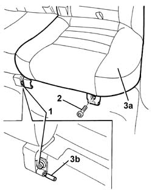

7050A22 REAR SEAT CUSHION - R+R
- Path
- Procedures > 70 FITTINGS > 7050 REAR SEATS > 7050A REAR SEAT ASSEMBLY > 7050A22 REAR SEAT CUSHION - R+R
- Kind
- repair procedure (removal / refitting; the operation number is the code)
- Applies to
- all engines; all production periods
- Interactive page
- https://sloeber94.github.io/elrnDB-aGt/en/#/125001940
Applies to: all engines; all production periods
 Removing
Removing
 Refitting
RefittingMove the front seat fully forward.
1. Loosen the bolt fixing the centre hinges.
2. Undo the bolt fixing the side hinges.
3. Remove the cushion (3a), releasing it from the pin (3b).

Applies to: all engines; all production periods
Refitting
RemovingCheck that the rear seat cushion is intact and shows no signs of damage.
Place the cushion in its seating, engaging it on the pin of the central hinge.
Tighten the hinge retaining bolts
 | Fastening | Component | Ø | Value (daNm) |
|---|---|---|---|---|
- | Bolt | REAR SEAT CUSHION | M8 | 25 |
Reposition the front seat.
Topics that link to this page (33)
- 1040A10 FUEL TANK - R + R AND DECANT FUEL
- 1040A14 FUEL TANK - R + R FOR REPLACEMENT
- 1040A30 OIL SEAL COVER, FLY WHEEL SIDE - R + R AND REPLACE SEALS
- 1040A70 SUBMERGED PUMP ASSEMBLY COMPLETE WITH LEVEL GUAGE CONTROL - R + R
- 3340A35 LEFT REAR WHEEL RPM SENSOR - R R
- 3340A37 RIGHT REAR WHEEL RPM SENSOR - R R
- 3340A44 REAR WHEEL RPM SENSORS (TWO) R R
- 5010C60 LH OR RH REAR AIR OUTLET -ONE- R R
- 5505C28 INTERGRATED ENGINE BAY AND ABS SYSTEM WIRING - R R
- 5505C41 CABIN WIRING - R R
- 5505C82 WIRING incorporated in REAR BUMPER RR
- 5540E10 REAR FOG LAMP (ONE), LH OR RH - R+R
- 5550D24 REVERSING LIGHT - R+R
- 5570T94 REAR TWEETER (ONE), LH OR RH - R R
- 5570T96 REAR SIDE SPEAKER - R R
- 5580T20 BOSE SOUND SYSTEM REAR SPEAKER (ONE), LH OR RH - R R
- 7035C14 FIXED REAR SIDE WINDOW ONE LH OR RH R R INCLUDES CLEANING OF HOUSING
- 7040B06 SIDE TRIM (ONE) LH OR RH, LOAD COMPARTMENT/LOAD PLATFORM - R R
- 7040H10 ROOF PANEL LINING - R R
- 7040H38 CENTRAL PILLAR UPPER ELEMENT - R R
- 7040H42 REAR PILLAR TRIM - R R
- 7040H50 REAR PANEL - R R
- 7040L10 CABIN FLOOR CARPET - R R
- 7040L13 PASSENGER COMPARTMENT FLOOR SOUNDPROOFING - R R
- 7040L18 PASSENGER COMPARTMENT FLOOR REAR CARPET - R R
- 7050A13 SPLIT REAR SEAT LEFT SQUAB R R
- 7050A14 SPLIT REAR SEAT ASSEMBLY - R+R
- 7050A15 SPLIT REAR SEAT RIGHT SQUAB R R
- 7065A12 FRONT SEAT BELT (ONE), LH OR RH, WITH PRETENSIONER ON WHEEL - R R
- 7065A18 HEIGHT ADJUSTER OF ON FRONT SEAT BELT ONE LH OR RH R R
- 7065B10 L/H OR R/H REAR SAFETY BELT (ONE) - R+R
- 7065B40 BRACKET FOR REAR SEAT BELT WHEEL (ONE) LH OR RH - R R
- 7210E66 REAR BUMPER